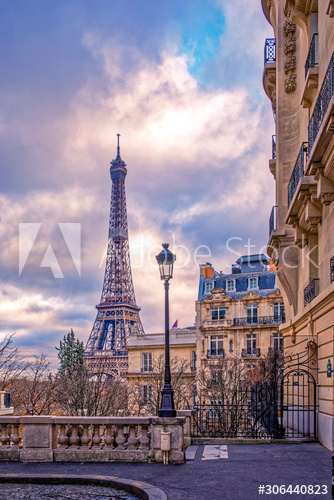

The great wall of China
- location: China
- No of visits: 5million per year
Great wall of China is the collective name of a series of fortification systems generally built across the historical northern borders of China to protect and consolidate territories of Chinese states and empires against various nomadic groups of the steppe and their polities.
Click here to read moreThe Eiffel Tower
- location: France
- No of visits: 4.5million per year
The Eiffel Tower is a wrought-iron lattice tower on the Champ de Mars in Paris, France. It is named after the engineer Gustave Eiffel, who's company designed and built the tower.
Click here to read moreThe Burj Khalifa

- location: Dubai
- No of visits: 4.2million per year
Construction of thr Burj Khalifa began in 2004, with the exterior completed five years later in 2009. The primary structure is reinforced concrete. The building was opened in 2010 as part of a new development called Downtown Dubai.
Click here to read more